보는 AI 2편: 소리를 알아듣는 AI¶
보는 AI · 2편. 그림으로 보는 소리·움직임 AI 시리즈예요. 0편부터 읽기
1편 「소리를 보다」에서 소리를 그림으로 바꿨어요. 이번엔 그 그림 2,000장으로 AI를 직접 가르쳐요. 아래 그림과 숫자는 모두 이 페이지를 만들면서 실제로 학습시킨 결과예요.
그림 9장 · 수식 없음 · 진짜 학습 결과 · 15분 정도
그림 1 · 재료: 이름표 붙은 소리 2,000개¶
AI를 가르치려면 정답이 붙은 예제가 많이 필요해요. 여기서는 ESC-50이라는 공개 자료를 써요. 개, 비, 사이렌처럼 50종류의 소리가 종류마다 40개씩, 하나에 5초예요.
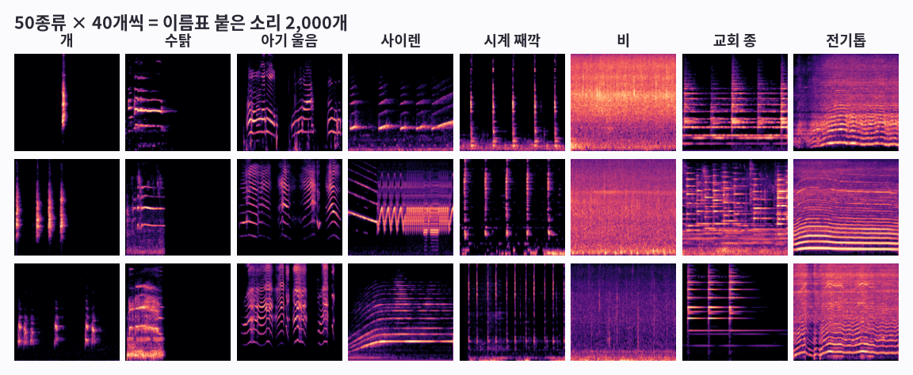
그림 보는 법
- 한 칸이 소리 하나를 그림(1편의 로그 멜 스펙트로그램)으로 바꾼 거예요.
- 세로로 같은 종류가 3개씩 있어요. 같은 종류끼리 무늬가 비슷하죠? 시계는 세로줄, 교회 종은 가로줄이 여러 겹이에요.
- 하지만 같은 개 소리도 조금씩 달라요. AI는 이 차이를 넘어서 ‘개다운 무늬’를 찾아야 해요.
한 줄 정리
AI는 이름표(정답)가 붙은 예제 묶음으로 배워요. 이 묶음을 ‘데이터셋’이라고 해요.
이 2,000개를 전부 공부에 쓰면 될까요? 아니에요. 이유를 볼게요.
그림 2 · 공부용과 시험용을 나눠요¶
시험 문제를 미리 보고 공부하면 점수는 높아도 진짜 실력은 알 수 없죠. AI도 같아요. 그래서 일부는 숨겨 두고 마지막 시험에만 써요.
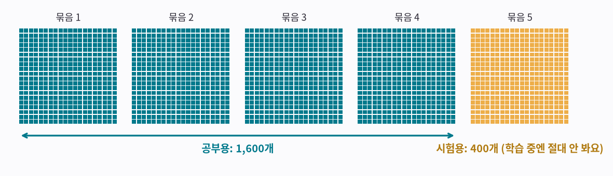
그림 보는 법
- 작은 네모 하나가 소리 하나예요. 자료는 처음부터 400개씩 5묶음으로 나뉘어 있어요.
- 청록색 4묶음(1,600개)으로 공부해요.
- 노란 5번 묶음(400개)은 학습하는 동안 한 번도 보여 주지 않아요. 시험에만 써서, AI에겐 모두 처음 듣는 소리예요.
한 줄 정리
공부용으로 배우고, 한 번도 안 본 시험용으로 진짜 실력을 재요.
이제 AI를 만들었어요. 처음엔 얼마나 알까요?
그림 3 · 처음 AI는 아무것도 몰라요¶
막 만든 AI 안에는 숫자가 약 119만 개 있는데, 전부 아무렇게나 정해져 있어요. 그래서 개 소리를 들려줘도 50종류에 골고루 찍어요.
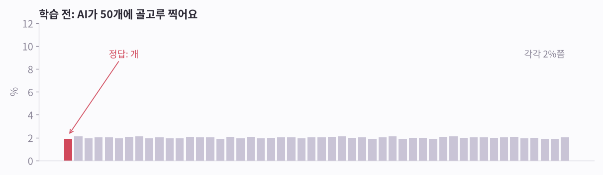
그림 보는 법
- 막대 50개는 50종류 각각에 AI가 건 확률이에요. 높을수록 ‘이거다’라고 믿는 거예요.
- 빨간 막대가 정답(개)인데, 다른 막대들과 높이가 비슷해요. 모두 2% 근처예요.
- 실제로 시험용 400개를 풀게 했더니 2%를 맞혔어요. 50개 중 하나를 찍으면 2%예요.
한 줄 정리
학습 전 AI는 그냥 찍어요. 여기서 출발해요.
이제 가르쳐 볼게요.
그림 4 · 학습 = 맞혀 보고, 채점하고, 조금 고치기¶
선생님이 문제집을 채점해 주는 것과 같아요. 사람이 규칙을 알려 주지 않아요. 맞혀 보고, 틀리면 고치는 걸 아주 많이 반복할 뿐이에요.
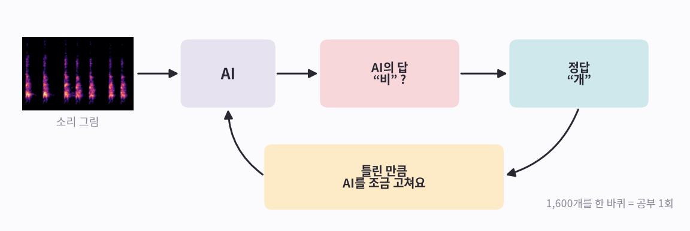
그림 보는 법
- ① 소리 그림을 AI에게 보여 줘요.
- ② AI가 답해요. 예: “비?”
- ③ 정답(“개”)과 비교해서, 틀린 만큼 AI 안의 숫자를 조금 고쳐요. 다음엔 ‘개’라고 답할 가능성이 조금 높아지게요.
- ④ 1,600개를 한 바퀴 돌면 공부 1회예요. 여기서는 200회(맞혀 보기 32만 번) 했고, RTX 3090 그래픽카드로 5분 걸렸어요.
한 줄 정리
학습은 ‘맞혀 보기 → 채점 → 조금 고치기’를 수십만 번 되풀이하는 일이에요.
이렇게 고치다 보면 AI 안에서 무슨 일이 생길까요?
그림 5 · AI 안에 ‘돋보기’가 저절로 생겨요¶
이번에 쓴 AI는 CNN이라는 종류예요. 작은 돋보기 수십 개로 그림을 훑으면서 무늬를 찾아요. 각 돋보기가 어떤 무늬를 찾을지는 학습하면서 스스로 정해요.
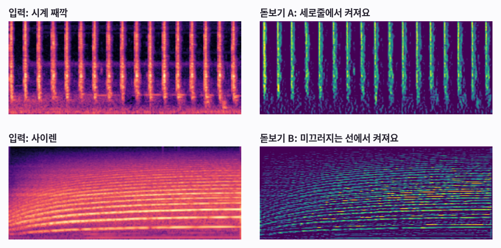
그림 보는 법
- 위: 시계 소리를 넣었더니 돋보기 A가 째깍거리는 세로줄에서 가장 밝게 켜졌어요.
- 아래: 사이렌을 넣었더니 돋보기 B가 위아래로 미끄러지는 선을 따라 켜졌어요.
- 아무도 ‘세로줄을 찾아라’라고 가르치지 않았어요. 맞히는 데 쓸모가 있어서 저절로 생긴 거예요.
한 줄 정리
AI는 무늬를 찾는 돋보기를 스스로 만들고, 찾은 무늬들을 합쳐서 답을 정해요.
이제 학습하는 동안 점수가 어떻게 변했는지 볼게요.
그림 6 · 점수가 오르는데… 외우기가 끼어들어요¶
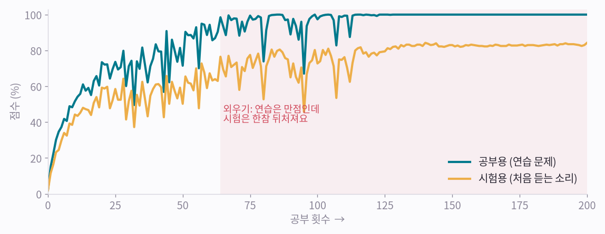
그림 보는 법
- 청록 선은 공부용(연습 문제) 점수예요. 금방 거의 100%가 돼요.
- 노란 선은 시험용(처음 듣는 소리) 점수예요. 훨씬 천천히 오르고, 84%에서 끝나요.
- 빨간 구간에서는 연습 문제를 다 맞히는데, 시험은 16점쯤 뒤처져 있어요. 배운 것 중 일부는 무늬가 아니라 외운 답이에요.
한 줄 정리
연습 점수와 시험 점수의 차이가 크면 ‘외우기’예요. 엔지니어들은 과적합(overfitting)이라고 불러요.
외우기를 막는 쉬운 방법이 있어요.
그림 7 · 문제를 바꿔 가며 공부시켜 봤어요¶
외우기를 막는 흔한 방법이 있어요. 공부할 때마다 소리를 살짝 바꿔서 보여 주는 거예요. 소리가 조금 늦게 시작하거나, 일부가 가려지거나, 비 소리가 섞여도 개는 개예요.
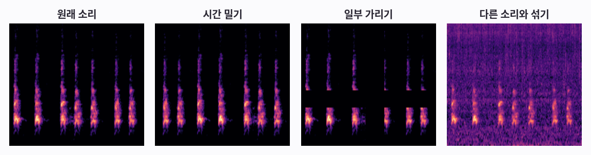
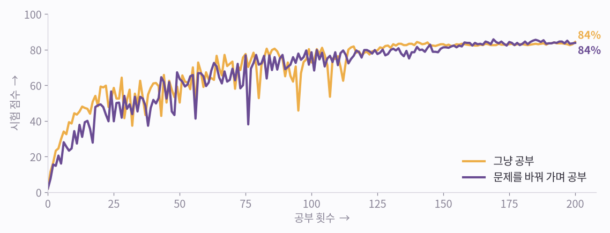
그림 보는 법
- 위: 원래 개 소리 그림과 바꾼 문제 세 가지예요. 시간 밀기, 일부 가리기(띠 모양으로 지움), 비 소리와 섞기.
- 아래: 그냥 공부한 AI(노랑)는 84%, 문제를 바꿔 가며 공부한 AI(보라)는 84%로 끝났어요. 사실상 같아요.
- 시험이 400개뿐이라 한 문제가 0.25점이에요. 이 정도 차이는 실력이 아니라 운이에요. 이번엔 이 방법이 도움이 안 됐어요.
한 줄 정리
문제 바꾸기(데이터 증강)는 외우기를 막는 흔한 방법이지만 만능은 아니에요. 도움이 되는지는 시험을 봐야 알아요.
다른 방법을 써 보기 전에, 이 AI가 뭘 틀리는지부터 볼게요.
그림 8 · 시험 결과: 잘 맞히는 소리, 헷갈리는 소리¶
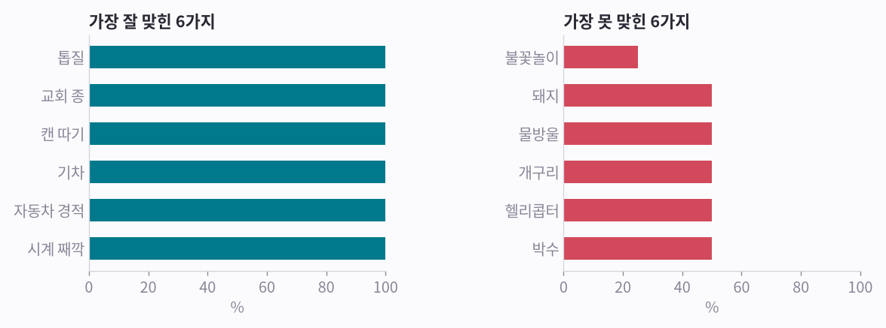
그림 보는 법
- 왼쪽: 가장 잘 맞힌 소리들이에요. 예: 톱질, 교회 종, 캔 따기.
- 오른쪽: 가장 못 맞힌 소리들이에요. 예: 불꽃놀이, 돼지, 물방울. 종류마다 시험 문제가 8개뿐이라 50%는 8개 중 4개예요.
- 가장 많이 헷갈린 건 ‘불꽃놀이’를 ‘장작 타는 소리’라고 답한 경우예요(5번). 아래 카드에서 실제 시험 소리를 들어 보세요.
- 카드마다 시험 소리의 그림 옆에, AI가 답한 종류의 공부용 소리 그림을 놓았어요. 틀린 카드에서는 두 그림 모두 가는 세로줄이 잔뜩 서 있어요. 불꽃놀이와 장작 타는 소리를 헷갈릴 만하죠. 움직임에도 이런 짝이 있어요. 4편 「움직임을 알아보는 AI」에서는 앉기와 서기가 그래요.
시험 문제를 직접 들어 보세요
확신하고 맞힘 · 정답: 개
듣기
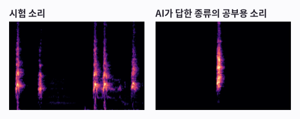
AI의 답 1~3위: 개 100%, 재채기 0%, 박수 0%
망설였지만 맞힘 · 정답: 비행기
듣기
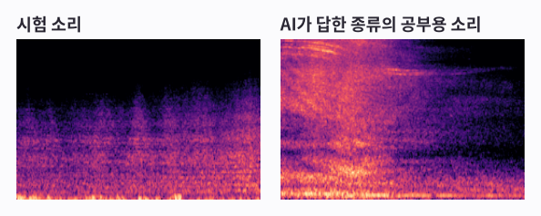
AI의 답 1~3위: 비행기 30%, 천둥번개 27%, 바람 22%
틀림 · 정답: 불꽃놀이
듣기
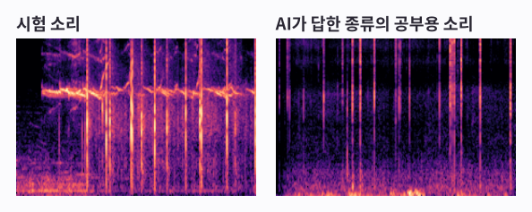
AI의 답 1~3위: 장작 타는 소리 54%, 발소리 13%, 불꽃놀이 10%
한 줄 정리
점수 하나보다 ‘무엇을 틀리는지’를 봐야 AI를 어떻게 고칠지 알 수 있어요.
더 잘하려면 예제가 훨씬 많아야 해요. 그런데 2,000개밖에 없다면?
그림 9 · 이미 많이 배운 AI를 빌려 써요¶
다른 연구팀이 소리 약 200만 개로 미리 학습시켜 공개한 큰 AI를 빌렸어요. 이 AI의 ‘눈’(숫자 약 8,600만 개)은 그대로 두고, 맨 끝의 ‘50종류 중 고르기’ 부분만 우리 1,600개로 새로 가르쳤어요. 몇 초면 끝나요.
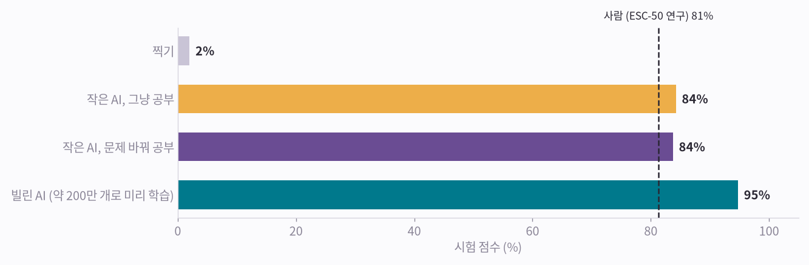
그림 보는 법
- 찍기는 2%예요. 우리가 처음부터 가르친 작은 AI는 84%(문제 바꿔 공부: 84%)였어요.
- 빌린 AI는 같은 시험에서 95%를 맞혔어요.
- 점선은 ESC-50을 처음 발표할 때 사람이 맞힌 점수예요. 81%예요. 빌린 AI는 이보다 높아요(재는 조건이 완전히 같지는 않아요).
- 빌린 ‘눈’만 있으면 학습을 아예 안 하고 참고 몇 개로 알아볼 수도 있어요. 5편 「참고만 주면 알아보는 AI」에서 해 봐요.
한 줄 정리
처음부터 가르치기보다, 이미 많이 배운 AI를 빌려 끝부분만 가르치는 게 훨씬 잘돼요. 이걸 ‘전이 학습’이라고 해요.
소리 AI는 대략 이렇게 배워요. 아래에 다섯 줄로 정리했어요.
다섯 줄 정리¶
- 이름표 붙은 예제를 많이 모으고, 소리마다 그림으로 바꿔요.
- 나눠요. 대부분으로 공부하고, 일부는 숨겨 뒀다가 시험에만 써요.
- AI가 맞혀 보면 채점해서 조금 고쳐요. 이걸 아주 많이 반복해요.
- 연습 점수만 앞서가면 외우는 중이에요. 고치는 방법을 시험해 보고, 시험 점수를 올리는 것만 남겨요.
- 예제가 적으면, 이미 많이 배운 AI를 빌려서 끝부분만 가르쳐요.
시리즈 · ← 1편, 소리를 보다 · 3편, 움직임을 보다 →
출처와 표기¶
녹음: ESC-50 (K. J. Piczak, CC BY-NC). 사람 점수 81.3%는 Piczak(2015). 빌린 모델: AST (Gong, Chung, Glass, MIT). 학습은 RTX 3090 한 대에서 실행했어요. NVIDIA·GeForce RTX는 NVIDIA Corporation의 상표이며, 지칭 목적으로만 사용했습니다.
용어 설명¶
- 이름표 붙은 소리: 레이블된 데이터셋
- 공부용 / 시험용: 학습 세트 / 테스트 세트 (여기선 ESC-50 5번 폴드)
- 공부 1회: 에폭(epoch)
- 틀린 정도: 손실(loss, 교차 엔트로피)
- 조금 고치기: 경사 하강법 (AdamW 같은 옵티마이저)
- 돋보기: CNN의 합성곱 필터
- 외우기: 과적합(overfitting)
- 문제 바꾸기: 데이터 증강 (시간 이동, SpecAugment, mixup)
- AI 빌려 쓰기: 사전 학습 모델로 전이 학습 (AudioSet으로 학습한 AST)